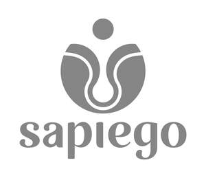

Trade Mark Journal No.2025/041 10 October 2025
UK00004269495 25 September 2025 (9,16,41,45)
Mark 1

Mark 2
- Class 9
- Apparatus and instruments for recording, transmitting, reproducing or processing sound, images or data; Recorded and downloadable media, computer software, blank digital or analogue recording and storage media; Computers and computer peripheral devices; Electronic publications, downloadable; Downloadable image files; Downloadable music files; Bags adapted for laptops; Cases for smartphones; Compact discs [audio-video]; Computer game software, downloadable; Computer game software, recorded; Computer operating programs, recorded; Computer programs, recorded; Computer screen saver software, recorded or downloadable; Computer software applications, downloadable; Computer software platforms, recorded or downloadable; Computer software, recorded; Covers for smartphones; Covers for tablet computers; Decorative magnets; Digital signs; Personal digital assistants [PDAs]; Downloadable emoticons for mobile phones; Downloadable graphics for mobile phones; Downloadable ring tones for mobile phones; Electronic sheet music, downloadable; Holograms; Humanoid robots with artificial intelligence; Interactive touch screen terminals; Intercommunication apparatus; Interfaces for computers; Magnets; Monitors [computer programs]; Mouse pads; Neon signs; Phonograph records; Sound recording discs; Record players; Sleeves for laptops; Smartglasses; Smartphones; Smartwatches; Teaching apparatus; Teaching robots; Wearable activity trackers; Wearable computers; Wearable video display monitors; Application software; Artificial intelligence and machine learning software; Artificial intelligence software; Audio books; Augmented reality software; Communication, networking and social networking software; Computer application software; Computer components and parts; Computer hardware; Computer software; Computers and computer hardware; Downloadable e-books; Downloadable films; Downloadable media; Downloadable multimedia files; Downloadable music files; Downloadable publications; Downloadable software; Downloadable videos; Games software; Media content; Music recordings; Podcasts; Recorded content; Software; Virtual and augmented reality software; Virtual reality software; Parts for the aforesaid; Fittings for the aforesaid; None of the aforesaid being enterprise software.
- Class 16
- Paper and cardboard; Printed matter; Bookbinding material; Photographs; Stationery and office requisites, except furniture; Drawing materials and materials for artists; Paintbrushes; Instructional and teaching materials; Plastic sheets, films and bags for wrapping and packaging; Albums; Almanacs; Announcement cards [stationery]; Aquarelles; Atlases; Baggage claim check tags of paper; Bags [envelopes, pouches] of paper or plastics, for packaging; Bookends; Booklets; Bookmarks; bookmarkers; Books; Bottle envelopes of paper or cardboard; Bottle wrappers of paper or cardboard; Boxes for pens; Boxes of paper or cardboard; Bunting of paper; Calendars; Cardboard tubes; Cardboard; Cards; Catalogues; Charts; Coasters of paper; Coloring books; Colouring books; Comic books; Conical paper bags; Covers [stationery]; Desk mats; Diagrams; Document files [stationery]; Document holders [stationery]; Drawer liners of paper, perfumed or not; Drawing pens; Drawing sets; Embroidery designs [patterns]; Envelopes [stationery]; Flyers; Folders for papers; Fountain pens; Graphic prints; Graphic reproductions; Greeting cards; Handkerchiefs of paper; Holders for checkbooks; Holders for cheque books; Jackets for papers; Labels of paper or cardboard; Lithographic works of art; Lithographs; Loose-leaf binders; Magazines [periodicals]; Manuals [handbooks]; handbooks [manuals]; Mats for beer glasses; Money clips; Musical greeting cards; Newsletters; Newspapers; Note books; Packing paper; Page holders; Paintings [pictures], framed or unframed; Pamphlets; Paper knives [letter openers]; Paper ribbons, other than haberdashery or hair decorations; Paper sheets [stationery]; Paper; Paperweights; Papier mâché; Pen cases; Pencils; Penholders; Pens [office requisites]; Periodicals; Photo-engravings; Photographs [printed]; Pictures; Placards of paper or cardboard; Place mats of paper; Portraits; Postage stamps; Postcards; Posters; Printed coupons; Printed matter; Printed publications; Printed sheet music; Prints [engravings]; Prospectuses; Protective covers for books; Rice paper; Ring binders; School supplies [stationery]; Scrapbooks; Sealing stamps; Song books; Stamp pads; Stamps [seals]; Stands for pens and pencils; Stationery; Steel pens; Stencil cases; Stencil plates; Stencils [stationery]; Stencils for decorating food and beverages; Stencils; Stickers [stationery]; Table linen of paper; Table napkins of paper; Table runners of paper; Tablecloths of paper; Tablemats of paper; Tags for index cards; Teaching materials [except apparatus]; Tickets; Towels of paper; Washi; Watercolors [paintings]; Watercolours [paintings]; Waxed paper; Wood pulp board [stationery]; Wood pulp paper; Wrappers [stationery]; Wrapping paper; Writing cases [sets]; Writing cases [stationery]; Writing materials; Writing or drawing books; Writing paper; Writing slates; Parts for the aforesaid; Fittings for the aforesaid.
- Class 41
- Education; Providing of training; Entertainment; Sporting and cultural activities; Academies [education]; Arranging and conducting of colloquiums; Arranging and conducting of concerts; Arranging and conducting of conferences; Arranging and conducting of congresses; Arranging and conducting of in-person educational forums; Arranging and conducting of seminars; Arranging and conducting of symposiums; Arranging and conducting of workshops [training]; Booking of seats for shows; Cinema presentations; Club services [entertainment or education]; Coaching [training]; Conducting guided tours; Correspondence courses; Educational services; Electronic desktop publishing; Entertainer services; Entertainment services; Film directing, other than advertising films; Film distribution; Film production, other than advertising films; Game services provided online from a computer network; Games equipment rental; Health club services [health and fitness training]; Instruction services; Know-how transfer [training]; Movie theatre presentations; Music composition services; News reporters services; Online publication of electronic books and journals; Organization of balls; Organization of competitions [education or entertainment]; Organization of cosplay entertainment events; Organization of exhibitions for cultural or educational purposes; Organization of fashion shows for entertainment purposes; Organization of shows [impresario services]; Party planning [entertainment]; Personal trainer services [fitness training]; Practical training [demonstration]; Presentation of live performances; Production of music; Production of radio and television programmes; Production of shows; Providing films, not downloadable, via video-on-demand services; Providing information in the field of education; Providing information in the field of entertainment; Providing information relating to recreational activities; Providing online electronic publications, not downloadable; Providing online music, not downloadable; Providing online videos, not downloadable; Providing recreation facilities; Providing television programmes, not downloadable, via video-on-demand services; Providing television programs, not downloadable, via video-on-demand services; Providing user rankings for entertainment or cultural purposes; Providing user ratings for entertainment or cultural purposes; Providing user reviews for entertainment or cultural purposes; Publication of books; Publication of texts, other than publicity texts; Radio entertainment; Rental of artwork; Rental of sound recordings; Rental of training simulators; Screenplay writing; Scriptwriting, other than for advertising purposes; Songwriting; Sport camp services; Teaching; Television entertainment; Theatre productions; Training services provided via simulators; Tutoring; Vocational guidance [education or training advice]; Vocational retraining; Writing of texts; Academic mentoring of school age children; Audio production; Audio, video and multimedia production, and photography; Business mentoring services; Career advisory services (education or training advice); Career counselling [training and education advice]; Career information and advisory services (educational and training advice); Consultancy and information services relating to arranging, conducting and organisation of workshops; Consultancy and information services relating to arranging, conducting and organisation of congresses; Consultancy and information services relating to arranging, conducting and organisation of concerts; Consultancy and information services relating to arranging, conducting and organisation of symposiums; Consultancy and information services relating to arranging, conducting and organisation of conferences; Consultancy and information services relating to arranging, conducting and organisation of colloquiums; Consultancy services in the field of entertainment; Consultancy services relating to training; Educational consultancy; Educational services relating to spiritual development; Hire of educational materials; Hire of printed matter; Issue of publications; Lease of instructional materials; Lease of teaching materials; Leasing of educational material; Lending libraries for films; Lending libraries for videos; Lending libraries; Lending of books and other publications; Lending of books and periodicals; Library services and rental of media; Multimedia publishing; Non-downloadable electronic publications; Personal coaching [training]; Personal development courses; Personal development training; Personal fitness training services; Personal training services; Production of films; Production of podcasts; Production of videos; Professional consultancy relating to education; Providing electronic publications; Provision of training courses in personal development; Publication of multimedia material online; Publication of printed matter and printed publications; Publication of texts; Publication services; Publishing services; Publishing, reporting, and writing of texts; Rental of printed publications; Ticket reservation and booking services for education, entertainment and sports activities and events; Training services; Translation and interpretation; Video game services; Video production; Information relating to the aforesaid; Advice relating to the aforesaid; Consultancy services relating to the aforesaid.
- Class 45
- Dating services; Licensing [legal services] in the framework of software publishing; Licensing of computer software [legal services]; Licensing of intellectual property; Online social networking services; Personal letter writing; Personal wardrobe styling consultancy; Computer software licensing; Counselling relating to spiritual direction; Internet-based social networking services; Licensing of computer software; Mentoring [spiritual]; Online social networking services accessible by means of downloadable mobile applications; Spiritual advice; Spiritual consultancy; Information relating to the aforesaid; Advice relating to the aforesaid; Consultancy services relating to the aforesaid.
Borbala Kovacs
Representative: Brand Protect Limited